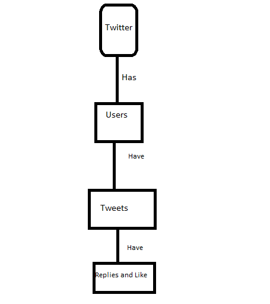

Twitter Clone
This Structure has been used in this Project

1.Create the Database named as twitter
create database twitter;
2 Use that database in the project
use twitter;
3.Create the Table named as users
create table users ( id int auto_increment primary key, username varchar(10),created_at TIMESTAMP DEFAULT NOW());
4.insert data in users table
insert into users (username) values ('Ketan'),('Ankit'),('Vijay');
5.create tweets table
create table tweets (id int auto_increment primary key,body text,user_id int,created_at TIMESTAMP DEFAULT NOW(), foreign key (user_id) references users(id) on delete cascade);
6.insert data in tweets
insert into tweets (body,user_id) values ('Web-Developer',1),('Java-Developer',2),('Full-Stack Developer',1),('Php Developer',3),('Java-Fx',2);
7.create replies table
create table replies( id int auto_increment primary key,body text,user_id int,tweet_id int, created_at timestamp default now(), foreign key (user_id) references users(id) on delete cascade,foreign key(tweet_id) references tweets(id) on delete cascade);
8.insert data in replies table
insert into replies (body,user_id,tweet_id) values ('yes',1,1),('NO',2,1),('Never','3','1');
insert into replies (body,user_id,tweet_id) values ('yes',1,2),('NO',3,2),('Never','1','2');
9.create like table
create table likes ( user_id int,tweet_id int , created_at timestamp default now(), foreign key (user_id) references users(id) on delete cascade, foreign key (tweet_id) references tweets(id) on delete cascade ,primary key(tweet_id,user_id) );
10.insert into likes
insert into likes (user_id,tweet_id) values (1,3),(1,1),(2,1),(3,1),(3,2);
output
1.Check the users
select * from users (Shows the all data of users)
2.Show the users have tweets
select users.username, tweets.body, tweets.created_at from tweets join users ON tweets.user_id = users.id;

3.Shows the user and his all tweets and reply on the tweets
select users.username , tweets.body as tweet, replies.body as reply, replies.created_at from replies join users on replies.user_id = users.id join tweets on replies.tweet_id = tweets.id ;
4.Shows the Like on the tweets along with tweets body
select count(likes.tweet_id) as likes, tweets.body from likes join tweets on likes.tweet_id = tweets.id group by likes.tweet_id;